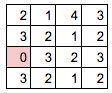
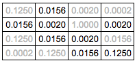
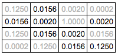

Heuristic Analysis
tournament.py modification
The file tournament2.py is copy of tournament.py, and is changed in following ways:
- Increase NUM_MATCHES from 5 to 25, so more matches will be done to improve banchmark accuracy.
- Remove
ID_Improved from test_agents, since ID_Improved is only needed to run once to get it's performance value.
Heuristic functions
ID_Improved (given)
ID_Improved calculate the number of available move of 2 players, and minus them to get the score.
The tournament2.py result is as follow:
*************************
Evaluating: ID_Improved
*************************
Playing Matches:
----------
Match 1: ID_Improved vs Random Result: 89 to 11
Match 2: ID_Improved vs MM_Null Result: 73 to 27
Match 3: ID_Improved vs MM_Open Result: 57 to 43
Match 4: ID_Improved vs MM_Improved Result: 54 to 46
Match 5: ID_Improved vs AB_Null Result: 64 to 36
Match 6: ID_Improved vs AB_Open Result: 64 to 36
Match 7: ID_Improved vs AB_Improved Result: 57 to 43
Results:
----------
ID_Improved 65.43%
| Random | MM_Null | MM_Open | MM_Improved | AB_Null | AB_Open | AB_Improved | Result |
|---|
| ID_Improved | 89 | 73 | 57 | 54 | 64 | 64 | 57 | 65.43% |
|---|
custom_score_0 (Improved ID_Improved)
The custom_score_0 put n moves forward into consideration.
For example, in a 4x4 game:

We first do breadth first search to find the number of move required to go to each cell, in empty board.
Since the calculation is based on empty board, the result can be cached to save CPU.


Then, for each cell which require n moves, we score it r0n.
For r0 = 1/8:
 

Finally, we sum up all cell which is not blocked, and subtract each other.
- Player A: value = 0.316
- Player B: value = 0.193
- score = 0.316 - 0.193 = 0.123
The tournament2.py result is as follow:
| r0 | Random | MM_Null | MM_Open | MM_Improved | AB_Null | AB_Open | AB_Improved | Result |
|---|
| 1/2 | 88 | 79 | 63 | 60 | 71 | 65 | 66 | 70.29% |
|---|
| 1/3 | 91 | 82 | 68 | 60 | 77 | 67 | 63 | 72.57% |
|---|
| 1/4 | 90 | 83 | 67 | 67 | 82 | 69 | 59 | 73.86% |
|---|
| 1/5 | 86 | 79 | 70 | 63 | 75 | 67 | 68 | 72.57% |
|---|
| 1/6 | 90 | 84 | 76 | 64 | 83 | 77 | 74 | 78.29% |
|---|
| 1/7 | 87 | 79 | 74 | 74 | 77 | 75 | 72 | 76.86% |
|---|
| 1/8 | 90 | 80 | 71 | 61 | 83 | 68 | 68 | 74.43% |
|---|
| 1/9 | 88 | 86 | 64 | 67 | 86 | 75 | 69 | 76.43% |
|---|
| 1/10 | 90 | 87 | 74 | 68 | 85 | 75 | 68 | 78.14% |
|---|
| ID_Imp | 89 | 73 | 57 | 54 | 64 | 64 | 57 | 65.43% |
|---|
It is better than ID_Improved.
custom_score_1 (Neural network)
The custom_score_1 is based on neural network and minimax Q learning.
First, we convert the 7x7 game data into 7x7x3 = 147 boolean value.
The first 7x7 boolean value represent which cell is not blocked.
The second 7x7 boolean value represent the location of active player.
The third 7x7 boolean value represent the location of inactive player.
becomes

Then we put the values into 3 hidden layers neural network, which represent the score of 8 move.
We apply boolean mask to filter out impossible move.
Score of move a0 in state s0:
Q(s0,a0)
The score of state s0 would be:
max( Q(s0,a0) for all a0 )
The neural network is trained by following equation:
Q(s0,a0) = -1 if loss
= +1 if win
= - gamma * max( Q(s1,a1) for all a1 ) otherwise
Since the Q function return the score of the active player, and the second move is made by opponent, the right hand side of the equation should be negative.
Step of training:
- Make 100000 moves
- Train upon 1-100000th move
- Make 100001st move
- Train upon 2-100001th move
- Make 100002st move
- Train upon 3-100002th move
- continue...
The tournament2.py result is as follow:
| moves | Random | MM_Null | MM_Open | MM_Improved | AB_Null | AB_Open | AB_Improved | Result |
|---|
| 200000 | 88 | 72 | 52 | 44 | 75 | 53 | 47 | 61.57% |
|---|
| 300000 | 88 | 80 | 58 | 53 | 75 | 63 | 51 | 66.86% |
|---|
| 400000 | 88 | 78 | 61 | 47 | 70 | 57 | 54 | 65.00% |
|---|
| 500000 | 90 | 81 | 61 | 55 | 75 | 54 | 56 | 67.43% |
|---|
| 600000 | 88 | 80 | 60 | 55 | 79 | 60 | 51 | 67.57% |
|---|
| 700000 | 82 | 77 | 53 | 56 | 80 | 63 | 50 | 65.86% |
|---|
| 3760000 | 90 | 75 | 51 | 54 | 74 | 55 | 45 | 63.43% |
|---|
The result is disappointing. The result does not grow in training.
In order to improve performance, complexity of the neural network should be increase. For example, apply convolution layer, and add more feature to input data set. More CPU / GPU time should be required.
Moreover, the trained neural network can be used only in game same as training game.
For games which have difference size, it is necessary to train another neural network.
The custom_score_1 require TensorFlow to run.
custom_score_2 (Distance from center)
The output is the distance between player location to the center.
Since we are not sure it is better to stay at center or edge, so we make 2 opposite functions to verify.
- version 2a: Self distance - Opponent distance. Stay on edge will get higher score.
- version 2b: Opponent distance - Self distance. Stay in center will get higher score.
| Random | MM_Null | MM_Open | MM_Improved | AB_Null | AB_Open | AB_Improved | Result |
|---|
| 2a | 82 | 73 | 60 | 48 | 64 | 60 | 49 | 62.29% |
|---|
| 2b | 87 | 65 | 62 | 49 | 72 | 56 | 59 | 64.29% |
|---|
The agent is weaker than ID_Improved.
The difference is so small that we cannot tell which strategy is better.
So we reduce the search_depth to 1 to verify.
| Random | MM_Null | MM_Open | MM_Improved | AB_Null | AB_Open | AB_Improved | Result |
|---|
| 2a | 37 | 11 | 6 | 7 | 12 | 8 | 8 | 12.71% |
|---|
| 2b | 78 | 54 | 21 | 22 | 43 | 24 | 27 | 38.43% |
|---|
Now we can see in depth 1 search, stay in center is better than stay in edge. The discovery can be used in building better agent.
custom_score_3 ( custom_score_0 + custom_score_2 )
custom_score_3 combine custom_score_0 and custom_score_2b by adding them up.
custom_score_3b = custom_score_0(r=1/6) + r3 * custom_score_2b
| r3 | Random | MM_Null | MM_Open | MM_Improved | AB_Null | AB_Open | AB_Improved | Result |
|---|
| cs2a | 82 | 73 | 60 | 48 | 64 | 60 | 49 | 62.29% |
|---|
| r=-0.8 | 83 | 82 | 60 | 58 | 75 | 61 | 56 | 67.86% |
|---|
| r=-0.6 | 89 | 80 | 65 | 57 | 77 | 57 | 54 | 68.43% |
|---|
| r=-0.4 | 90 | 80 | 70 | 59 | 78 | 69 | 60 | 72.29% |
|---|
| r=-0.2 | 88 | 89 | 71 | 58 | 82 | 63 | 65 | 73.71% |
|---|
| cs0 | 89 | 87 | 75 | 72 | 79 | 71 | 74 | 78.14% |
|---|
| r=0.2 | 92 | 89 | 70 | 66 | 77 | 71 | 67 | 76.00% |
|---|
| r=0.4 | 86 | 80 | 65 | 67 | 77 | 77 | 69 | 74.43% |
|---|
| r=0.6 | 89 | 77 | 72 | 61 | 76 | 70 | 65 | 72.86% |
|---|
| r=0.8 | 90 | 89 | 74 | 64 | 77 | 72 | 72 | 76.86% |
|---|
| cs2b | 87 | 65 | 62 | 49 | 72 | 56 | 59 | 64.29% |
|---|
It show both custom_score_2a and custom_score_2b does not improve custom_score_0.
custom_score_4 (Simulation)
custom_score_4 run simulation play to end game, and output the win/loss of the result.
In simulation, the game will choose the move closest to the board center. We choose this feature since it is less CPU consumption and effective.
For the game which win in n step, the function would output r4n (0 < r4 < 1).
For the game which loss in n step, the function would output -r4n.
So the AI would prefer early win than later win, and prefer later loss than early loss.
The runtime and performance of this function depends on number of blank cell in the board.
With more blank cell, simulation require more time, and the result is less accurate.
As step count increase, +/-r4n would be close to zero.
So we may put a cutdown to save CPU. But now we just simulate to endgame.
It is meaningless to tune r4. We just need to ensure 0 < r4 < 1.
| type | Random | MM_Null | MM_Open | MM_Improved | AB_Null | AB_Open | AB_Improved | Result |
|---|
| cs4 | 93 | 77 | 67 | 63 | 68 | 68 | 59 | 70.71% |
|---|
It's strength is close to ID_Improved, and weaker than custom_score_0, even though it consume high CPU.
custom_score_5 (custom_score_0 + custom_score_4)
custom_score_5 combine custom_score_0 and custom_score_4 by adding them together.
custom_score_5 = (1-r5) * custom_score_0 + r5 * custom_score_4
To get the best performance of the function, we need to tune r0, r4 and r5 together.
For simplicity we take r0 = 1/6, r4 = 0.99, and tune r5.
Result: (r0 = 1/6, r4 = 0.99)
| r5 | Random | MM_Null | MM_Open | MM_Improved | AB_Null | AB_Open | AB_Improved | Result |
|---|
| cs0 | 90 | 84 | 76 | 64 | 83 | 77 | 74 | 78.29% |
|---|
| 0.1 | 93 | 88 | 78 | 75 | 83 | 76 | 73 | 80.86% |
|---|
| 0.2 | 95 | 90 | 74 | 77 | 87 | 77 | 72 | 81.71% |
|---|
| 0.3 | 90 | 87 | 75 | 76 | 86 | 78 | 73 | 80.71% |
|---|
| 0.4 | 93 | 89 | 73 | 69 | 90 | 73 | 77 | 80.57% |
|---|
| 0.5 | 94 | 85 | 78 | 77 | 91 | 80 | 71 | 82.29% |
|---|
| 0.6 | 98 | 90 | 78 | 73 | 82 | 84 | 68 | 81.86% |
|---|
| 0.7 | 90 | 91 | 72 | 70 | 89 | 79 | 72 | 80.43% |
|---|
| 0.8 | 91 | 94 | 73 | 71 | 87 | 77 | 66 | 79.86% |
|---|
| 0.9 | 94 | 90 | 75 | 71 | 87 | 71 | 74 | 80.29% |
|---|
| cs4 | 93 | 77 | 67 | 63 | 68 | 68 | 59 | 70.71% |
|---|
The performance of custom_score_5 is better than custom_score_0 and custom_score_4.
r0, r4, and r5 can be further tuned to achieve better performance.
Conclusion
Here is the summary of the heuristic functions:
| type | Random | MM_Null | MM_Open | MM_Imp | AB_Null | AB_Open | AB_Imp | Result |
|---|
| ID_Improved | 89 | 73 | 57 | 54 | 64 | 64 | 57 | 65.43% |
|---|
| cs0 | 90 | 84 | 76 | 64 | 83 | 77 | 74 | 78.29% |
|---|
| cs1 | 90 | 75 | 51 | 54 | 74 | 55 | 45 | 63.43% |
|---|
| cs2 | 87 | 65 | 62 | 49 | 72 | 56 | 59 | 64.29% |
|---|
| cs3 | 90 | 89 | 74 | 64 | 77 | 72 | 72 | 76.86% |
|---|
| cs4 | 93 | 77 | 67 | 63 | 68 | 68 | 59 | 70.71% |
|---|
| cs5 | 94 | 85 | 78 | 77 | 91 | 80 | 71 | 82.29% |
|---|
We recommend custom_score_5:
- It achieve best result when matching with random opponent, with chance 94%.
- It achieve good result when matching with intelligent opponents such as
open_move_score and improved_score, with higher than 70% chance. Although the winning rate versus AB_Imp is slightly lower, it perform best when versus MM_Open, MM_Improve and AB_Open.
- It's result % is the best among all other custom score.
In CPU limited environment, we recommend custom_score_0, as the evaluate function can run in constant time in larger board.
In extreme limited environment, custom_score_2b would be a choice as it does not require much calculation.
tournament.py output
This script evaluates the performance of the custom heuristic function by
comparing the strength of an agent using iterative deepening (ID) search with
alpha-beta pruning against the strength rating of agents using other heuristic
functions. The `ID_Improved` agent provides a baseline by measuring the
performance of a basic agent using Iterative Deepening and the "improved"
heuristic (from lecture) on your hardware. The `Student` agent then measures
the performance of Iterative Deepening and the custom heuristic against the
same opponents.
*************************
Evaluating: ID_Improved
*************************
Playing Matches:
----------
Match 1: ID_Improved vs Random Result: 17 to 3
Match 2: ID_Improved vs MM_Null Result: 14 to 6
Match 3: ID_Improved vs MM_Open Result: 11 to 9
Match 4: ID_Improved vs MM_Improved Result: 12 to 8
Match 5: ID_Improved vs AB_Null Result: 15 to 5
Match 6: ID_Improved vs AB_Open Result: 12 to 8
Match 7: ID_Improved vs AB_Improved Result: 12 to 8
Results:
----------
ID_Improved 66.43%
*************************
Evaluating: Student
*************************
Playing Matches:
----------
Match 1: Student vs Random Result: 18 to 2
Match 2: Student vs MM_Null Result: 18 to 2
Match 3: Student vs MM_Open Result: 16 to 4
Match 4: Student vs MM_Improved Result: 14 to 6
Match 5: Student vs AB_Null Result: 17 to 3
Match 6: Student vs AB_Open Result: 15 to 5
Match 7: Student vs AB_Improved Result: 17 to 3
Results:
----------
Student 82.14%